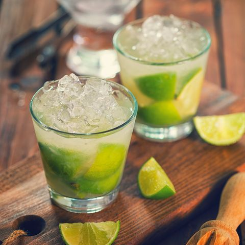

Caipirinha

Description
A Caipirinha is the unofficial national cocktail of Brazil. It is made with cachaça, which is a freshly pressed sugarcane rum, lime, and a touch of sugar
Ingredients
- 6 lime chunks
- 1/8 oz. agave
- 2 oz. cachaça
Steps
- Add all Ingredients to a shaking tin
- Using a muddler, press down into the tin repeatedly until the lime chunks have been mangled beyond recognition, about 6 times
- Fill shaking tin with 1 inch ice cubes, half of them cracked with an ice cracking spoon
- Shake hard for 10 seconds
- Dump entire contents of the shaking tin, unstrained, directly into a double rocks glass
- Serve